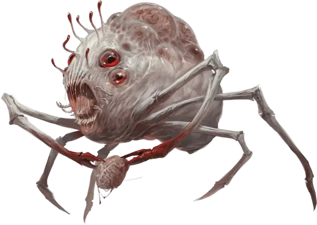

Нье-тальггу
Neh-thalggu
Большая Аберрация, обычно хаотично-нейтральная

Класс Доспеха 14 (природный доспех)
Хиты 95 (10к10 + 40)
Скорость 40 футов
| мод | спас | ||
|---|---|---|---|
| СИЛ | 15 | +2 | +2 |
| ЛОВ | 8 | −1 | −1 |
| ТЕЛ | 18 | +4 | +4 |
| мод | спас | ||
|---|---|---|---|
| ИНТ | 12 | +1 | +1 |
| МДР | 11 | +0 | +0 |
| ХАР | 7 | −2 | −2 |
Чувства тёмное зрение 120 футов, пассивное Восприятие 10
Языки Глубинная речь
Опасность 4 (1100 опыта)
Бонус мастерства +2
Особенности
Выгрузка сознания. Когда нье-тальггу поглощает мозг, он магическим образом получает способность говорить и понимать язык того, чей мозг поглотил.
Необычная природа. Нье-тальггу не нуждается в воздухе.
Действия
Мультиатака. Нье-тальггу совершает одну атаку Укусом и две атаки Когтями.
Укус. . Рукопашная атака оружием: +4 к попаданию, досягаемость 5 фт., одна цель. Попадание: 11 (2к8 + 2) колющего урона.
Коготь. . Рукопашная атака оружием: +4 к попаданию, досягаемость 5 фт., одна цель. Попадание: 4 (1к4 + 2) рубящего урона.
Извлечение мозга. . Рукопашная атака оружием: +4 к попаданию, досягаемость 5 фт., один недееспособный гуманоид. Попадание: 35 (10к6) колющего урона. Если этот урон уменьшает хиты цели до 0, нье-тальггу убивает цель, извлекая и пожирая её мозг.
Взрыв сознания (перезарядка 5–6). Нье-тальггу магическим образом испускает психическую энергию в одного гуманоида, которого может видеть в пределах 10 футов. Цель должна совершить спасбросок Мудрости Сл 14. При провале, цель получает 9 (2к8) урона психической энергией и становится недееспособной до конца своего следующего хода. При успехе, цель получает половину этого урона и остается дееспособной.
Использование заклинаний (псионика). Базовой характеристикой нье-тальггу является Интеллект (Сл спасброска от заклинаний 11). Он может накладывать следующие заклинания, не нуждаясь ни в каких компонентах. Чтобы наложить заклинание, он должен поглотить необходимое количество мозгов, как указано ниже:
• 1/день каждое: руки Хадара [arms of Hadar] (1 мозг), обнаружение магии [detect magic] (2 мозга), волшебная стрела [magic missile] (3 мозга), Тензеров парящий диск [Tenser’s floating disk] (4 мозга), тьма [darkness] (5 мозгов), удержание личности [hold person] (6 мозгов), невидимость [invisibility] (7 мозгов), паук [spider climb] (8 мозгов), ужас [fear] (9 мозгов), гипнотический узор [hypnotic pattern] (10 мозгов), образ [major image] (11 мозгов), зловонное облако [stinking cloud] (12 мозгов).
Описание
Известные по всей Мультивселенной как «собиратели мозгов», нье-тальггу поглощают мозги гуманоидов и используют их как вместилище, усиливающее их магические способности.
Нье-тальггу родились в кошмарном Дальнем Пределе, но распространились по Астральному плану, и нашли путь в различные миры Материального плана, где мозгов гораздо больше. У нье-тальггу луковицеобразное тело и шесть ног, как у ракообразного. В их отвратительном облике четыре выпуклых глаза и пасть, наполненная зубами, занимают главенствующее положение. Позади тела и над ним выступают одна или несколько шишек, в каждой из которых находится мозг, съеденный нье-тальггу.
После убийства жертвы нье-тальггу вскрывает её голову своими клешнями и извлекает мозг. Затем он целиком проглатывает его. Полученный мозг хранится в одном из нескольких углублений головы нье-тальггу. Когда он собирает двенадцать мозгов, его охватывает желание вернуться в Дальний Предел. Он начинает тратить всю свою энергию на поиски пути домой.
При столкновении с нье-тальггу бросьте к12, чтобы определить, сколько мозгов он уже собрал.